第七章 图数传远程桌面连接设置¶
7.0 说明¶
您购买收到的图数传地面端和图数传移动端，默认已经按照背面的IP配置连接成功，可以跳过7.1节和7.2节进行测试。
如果意外更改或其他原因，导致图数传地面端和图数传移动端连接不成功，可以按步骤依次配置。
7.1 图数传地面端配置¶
- 1.通过提供的网线将图数传地面端用与PC端连接.
- 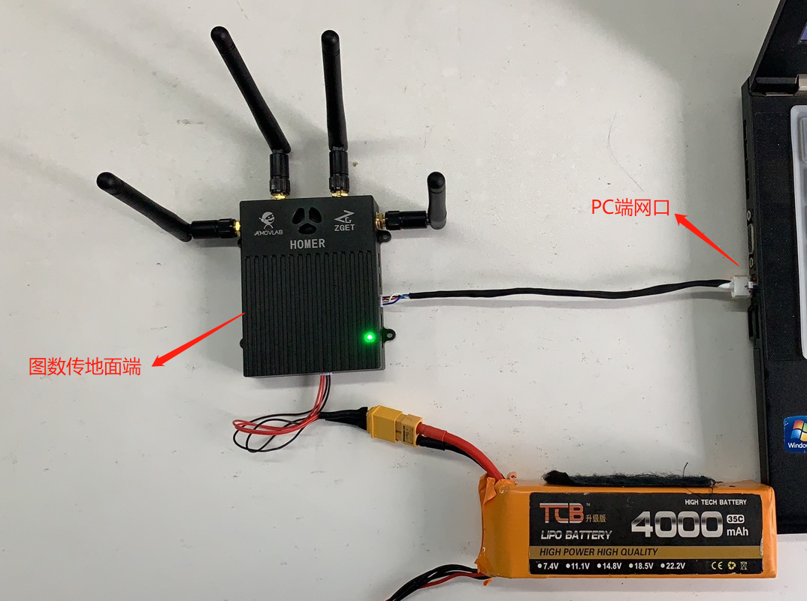
- 2.查看图数传地面端背面提供的出厂IP,如图可知默认IP地址为192.168.1.100
- 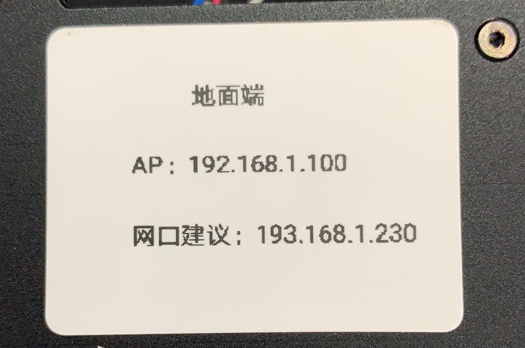
- 3.禁用无线网络，设置以太网的固定IP到192.168.1.x网段，例如下图
- 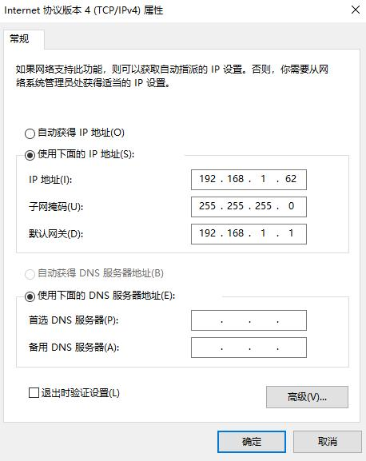
- 4.通过终端，ping图数传地面端的IP地址192.168.1.100，ping通说明与图数传地面端连接正常。

- 5打开浏览器，输入图数传地面端的IP地址192.168.1.100，打开配置界面，账号密码均为admin。
- 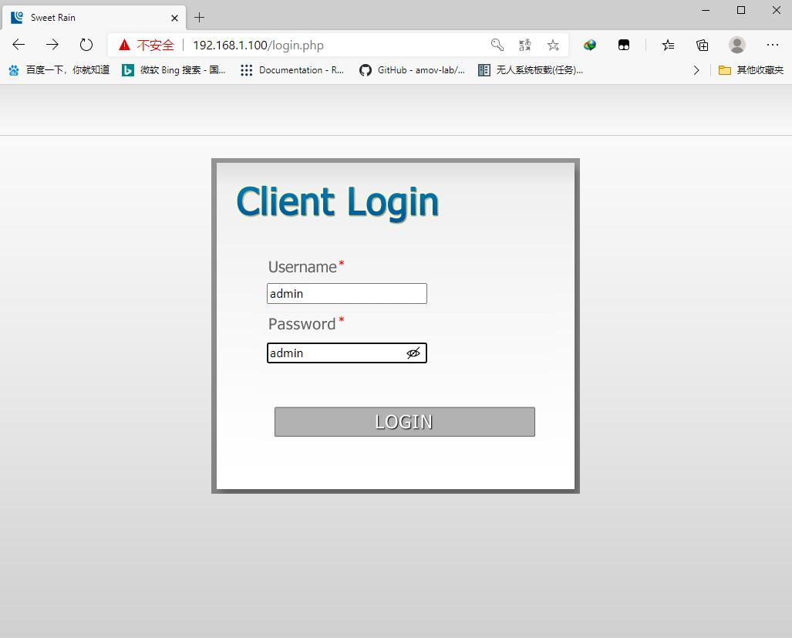
- 6．点击Config下的Wireless，记录ESSID和Passphrase ，例如ESSID为AMOV-01；Passphrase为123456789.
- 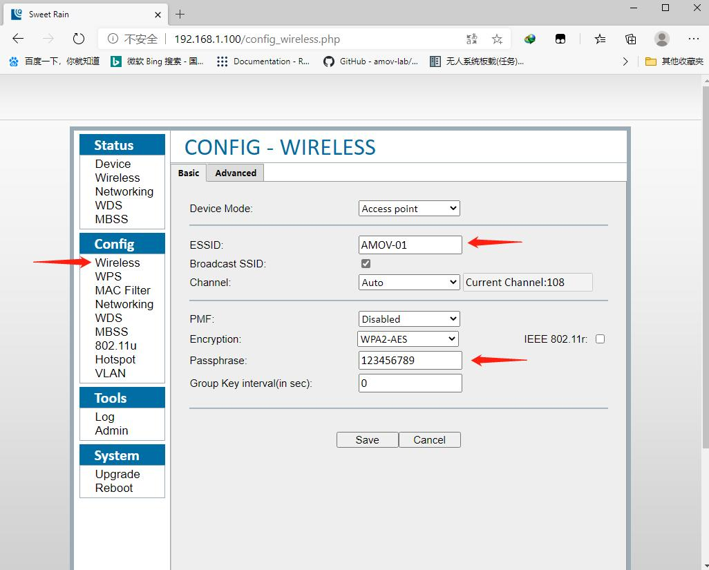
7.2 连接图数传移动端和图数传地面端¶
1.按照图数传地面端的连接方法，把图数传移动端连接到刚才配置图数传地面端的PC上。 2.查看图数传移动端背面提供的出厂IP,如图可知默认IP地址为192.168.1.50
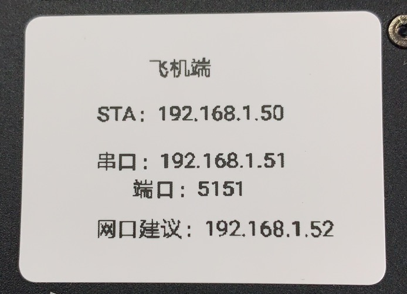
- 3.通过终端，ping图数传地面端的IP地址192.168.1.50，ping通说明与图数传移动端端连接正常。
- 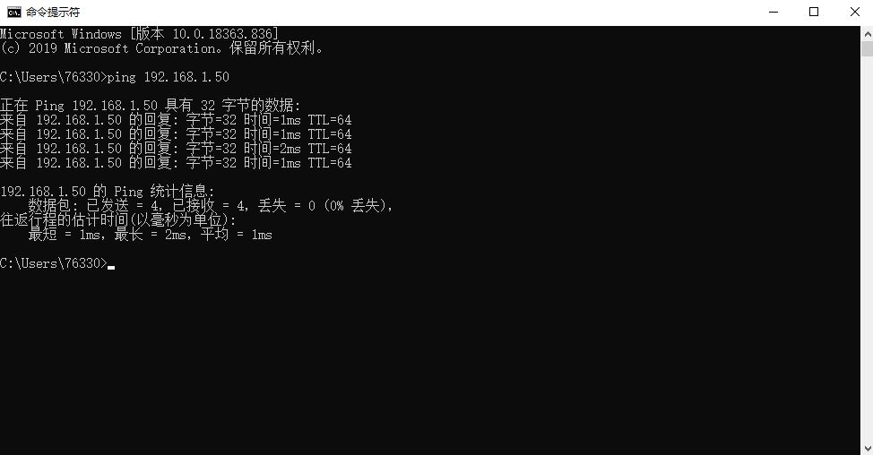
- 4.打开浏览器，输入图数传移动端的IP地址192.168.1.50，打开配置界面，账号密码均为admin。

- 5．点击Config下的Wireless，点击ESSID后的Scan AP
- 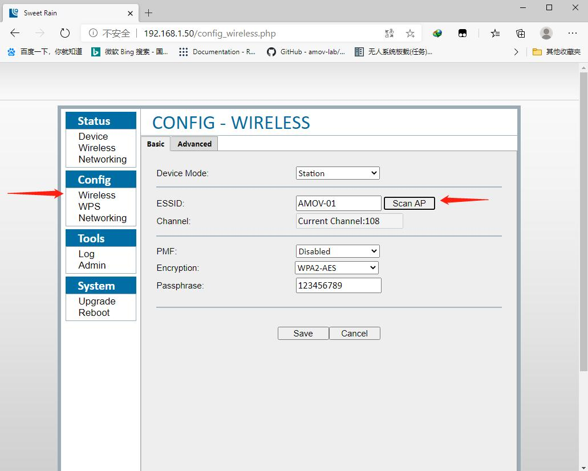
- 6.选择当时图数传地面端的ESSID名称，输入记录的Passphrase，单击copnnect连接。
- 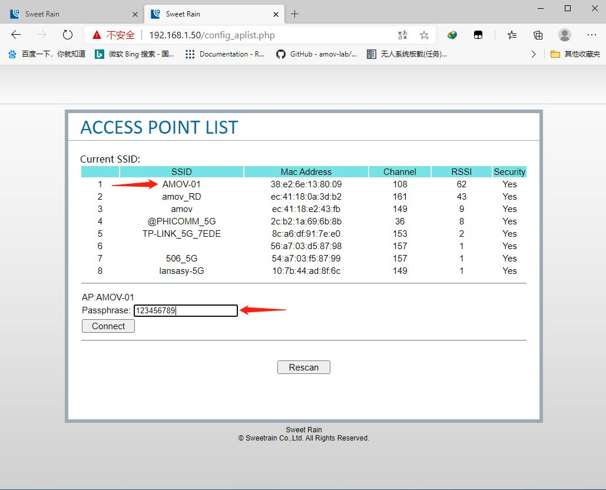
- 7.在图数传地面端供电工作的情况下，使用PC终端ping图数传地面端的IP，ping通说明图数传地面端和移动端连接成功。

7.3 配置移动端¶
1.将图数传移动端用与移动端连接，图数传地面端用与PC端连接。
- 2.进入移动端系统，禁用无线网络，设置以太网的固定IP到192.168.1.x网段，例如下图

- 3.打开终端依次ping图数传移动端、图数传地面端、PC端，测试连接；ping通说明连接正常。
- 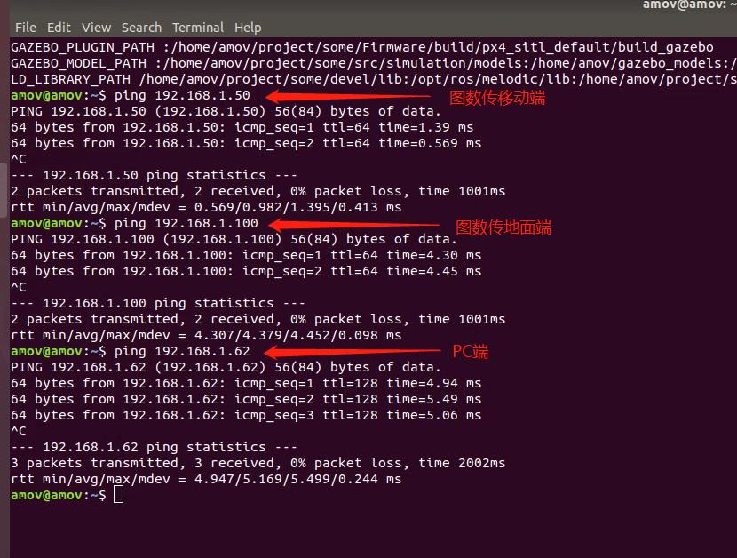

7.5 添加网络摄像头¶
- 把按上章配置好的网络摄像头，接入图数传移动端的网口。在打开NoMachine远程桌面的同时，可以打开QGC地面站。按照上章介绍添加RTSP的URL，查看网络摄像头的图像。整体效果如下。
- 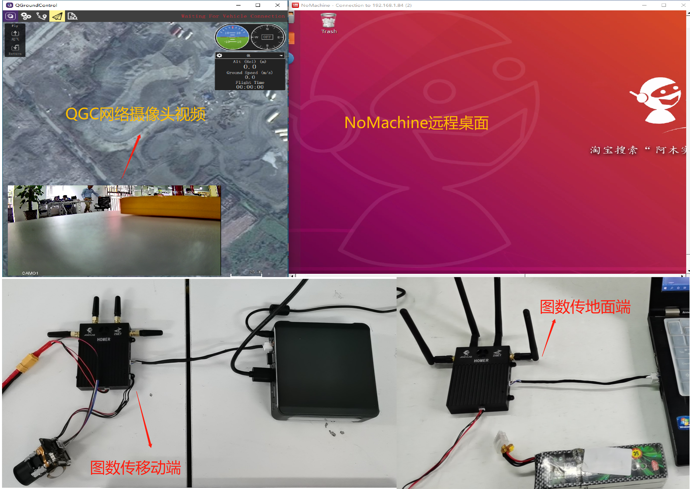